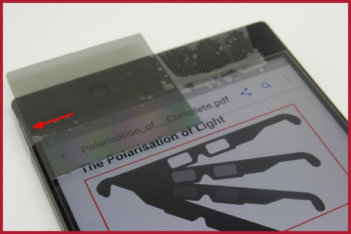
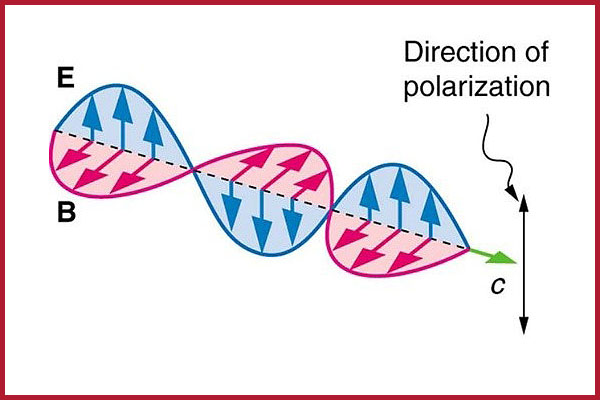
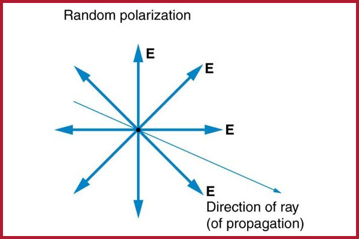
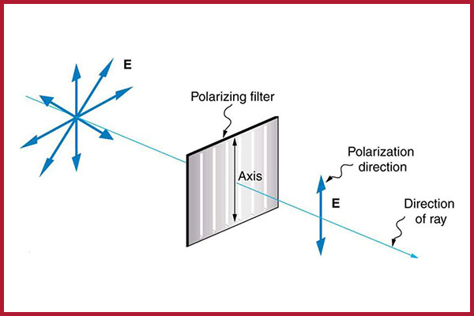

The Polarisation of Light
Linear Polarisation Activity
 | Video |
 | Activity Overview |
In this activity, a source of polarised light, a polariser, and a smartphone are used to investigate Malus’ Law of polarisation.
 | Learning Objectives |
During this activity, students will:
- investigate light through a polarising filter;
- use their own smartphone as a digital light meter; and
- calculate and plot the effect of polarisation by Malus's Law.
 | Equipment |
- Smartphone with light sensor;
- Physics Toolbox Sensor Suite Software (free download via Google Play);
- Physics Toolbox Sensor Suite Software (free download via Apple App Store);
- Spreadsheeting Software (e.g. Microsoft Excel, Google Sheets, and OpenOffice Calc);
- Sheet of polarising material; and
- LCD monitor or similar linear polarising light source.
Note: a simple digital light meter can be used in place of a smartphone.
Activity Equipment: Smartphone and polaristion filter.
 | Activity Files |
Activity Worksheet
Activity Solutions
 | Background Information |
As shown in the figure below, an electromagnetic wave, such as light, is produced by both an electric (E) and magnetic field (B) component, which oscillates perpendicular to the direction of propagation (c). The direction of the electric field component is called the polarisation of light.
Polarisation of EM waves (Image credit: https://opentextbc.ca/)
Natural light and most other common sources of visible light are unpolarized because they’re composed of many waves with all possible directions of polarisation. The figure below illustrates unpolarised light, with arrows representing the many directions of polarisation of the many individual waves composing the light ray
Random polarisation (Image credit: https://physics.stackexchange.com)
A special material, known as a polarising filter, can limit the direction of polarisation in light. You may have heard of or even own a pair of Polaroid sunglasses, which can cut the glare out of light reflected from water or glass. This special ability is possible because of their polarising filters.
Example of a polarising filter (Image credit: https://physics.stackexchange.com)
Let’s now consider a beam of polarised light, which strikes a piece of polarising material, like in the figure above. Only the component of the wave parallel to the axis of a filter is passed through. If we let ? equal the angle between the axis of the polarising material and the polarisation of the incident light. The intensity of light that passes through the polarising material will diminish by an amount equal to: $$I= {I_0 sin ^2 \theta}$$ In this case, \(I_0\) is the initial intensity of the light before it passes through the polarising material. This equation is known as Malus’s Law, named after the French physicist and mathematician, Étienne-Louis Malus, who discovered the polarisation of light in the early 1800s.
In this experiment, a source of polarised light, a polariser, and a smartphone are used to investigate Malus’ Law. The source of linear polarised light is a flat computer monitor displaying plain white light, while the polariser is a small piece of polarising material. Sensors in the smartphone, namely the light sensor and gyroscope, are used to measure the intensity (i.e. illuminance) of light and the orientation angle, respectively.
 | Acknowledgement |
Activity created by Michael Cowley, Macquarie University.
Citation: Monteiro et al., arXiv:1607.02659 (2016)